Line/path integrals
| > | restart; with(LinearAlgebra): with(VectorCalculus): |
Warning, the names &x, CrossProduct and DotProduct have been rebound
Warning, the assigned names <,> and <|> now have a global binding
Warning, these protected names have been redefined and unprotected: *, +, ., D, Vector, diff, int, limit, series
We have used line integrals in two fundamentally different forms, as an integral for scalar functions and as an integral for vector fields. Maple distinguishes between these types and calls them path integrals and line integrals, respectively.
The path integral of a scalar function f(x,y,z) over a path r(t) is defined by
| > | r:= <x(t),y(t),z(t)>: |
| > | int( f(x(t),y(t),z(t))*Norm(diff(r,t),2), t=a..b ); |
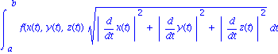
However, the VectorCalculus package makes this easier using PathInt. For example,
| > | PathInt( z+(x*y)^2, [x,y,z]=Path(<cos(3*t),sin(3*t),4*t>,t=0..6*Pi), inert ); |
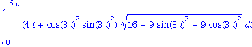
| > | value(%); |
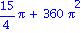
There are some nice predefined path types that save you from having to define a parameterization. For example,
| > | PathInt(x*y-z, [x,y,z]=LineSegments(<0,0,0>,<1,1,1>,<-1,-2,-3>), inert ); |
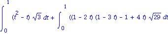
| > | PathInt( x^2+y^2, [x,y]=Circle(<1,1>,1), inert ); |
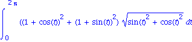
For integration of a vector field, use LineInt. For example, to find work done by the force field
| > | F:= VectorField( <x^2*y,y^2*x>, 'cartesian'[x,y] ); |
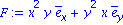
over the parabola y=x^2 , between (-1,1) and (1,1), we would use
| > | LineInt( F, Path( <t,t^2>, t=-1..1 ), inert ); |
| > | value(%); |
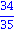
Note that we could get the same thing manually by a regular integral of F . dr.
| > | r:=<t,t^2>:
int( evalVF(F,r) . diff(<t,t^2>,t), t=-1..1 ); |
Fundamental Theorem of Line Integrals
The FTLI says that for conservative fields, the potential can be used as an antiderivative to evaluate any line integral. Here is a demonstration.
| > | SetCoordinates(cartesian[x,y,z]); |

| > | F:= VectorField( <1+y+z, x+z, x+y> ); |
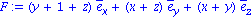
| > | r:= t -> < t^3, sqrt(t), 2*t/(1+t) >; |
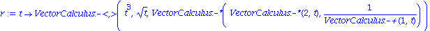(t^3, sqrt(t), VectorCalculus:-*(VectorCalculus:-*(2, t), 1/VectorCalculus:-+(1, t))) end proc" align="center">
| > | LineInt( F, Path(r(t),t=1..2) ); |
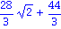
We now compare to the difference in values of the potential function at the endpoints.
| > | phi:= ScalarPotential(F); |
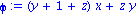
| > | phi:= unapply( phi,[x,y,z] ); |
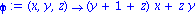
| > | A:= r(1); B:= r(2); |
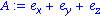
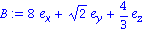
| > | phi( B[1],B[2],B[3] ) - phi( A[1],A[2],A[3] ); |